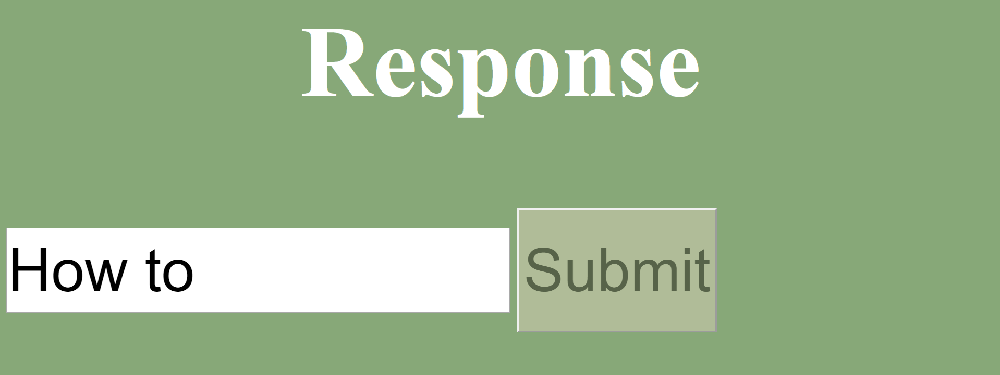
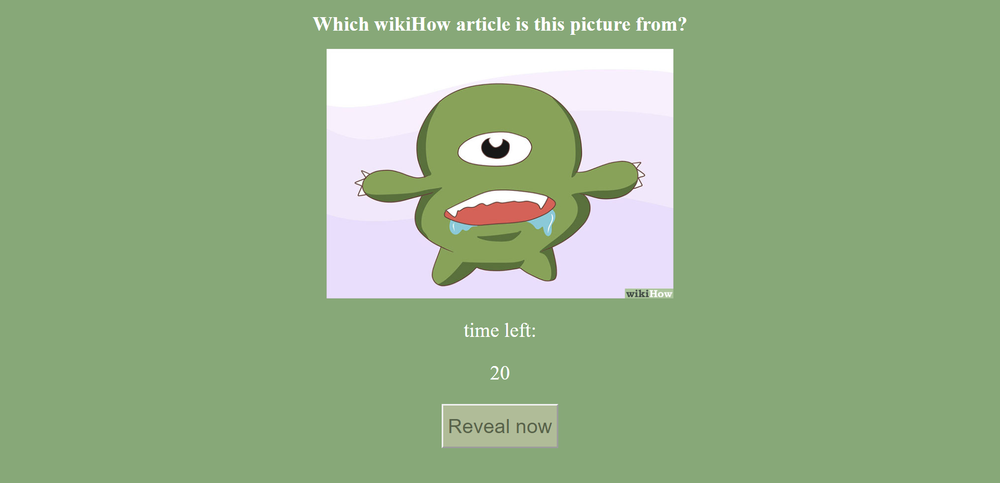
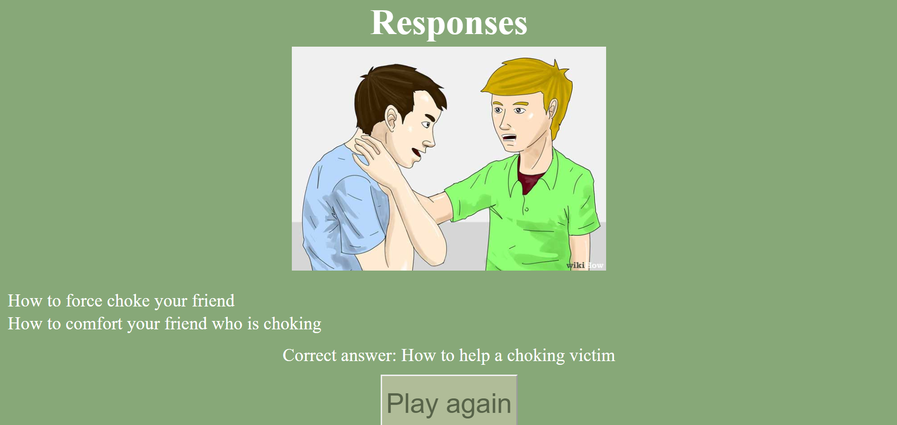

A party game where you get to caption WihiHow pictures.
The index screen displays the buttons to allow selection of host or player.
The guess/player page displays a text entry box to allow players to submit responses.
The code for this page consists of a simple HTML
form that submits to a php file called responseSubmit.
The responsSubmit file submits the response from the HTML form to the
mySQL server. Its really about as simple as a database interaction can get.
I ran my server with XAMPP using MariaDB and PHP 7.3.10.
The below code sample shows how the php file connects to the database and
inserts the response into the response table.
The picture/host page displays an image, and a timer. While the timer is counting down, submissions are entered by the players.
The server has a folder of images from wikiHow. I downloaded these images
from damn.dog. The picture page contains an
array of the names of all of these images, and selects one at random.
The timer is created by updating a HTML element every second using a simple
Javascript function (shown below). It works by calculating the time 30
seconds from when the page is loaded, and then every second, calculating how
much longer until that time is reached.
Its also important to note that the picture page stores the path of the
image in a cookie. This will later be used to not only show the picture when
we move to another page, but also to reveal what the "correct answer" was.
Once the timer has reached 0, the submissions collected from the players
as well as the original caption are displayed on-screen.
This happens when the picture page calls revealPage.php. This file will
first establish another connection to the database in the same way as shown
previously. Then, a query will be sent to the database to return all items
from the responses table. These responses will then be shown on-screen.
Below is the php code that does this.
To file path of the image shown on the picture page is loaded from the cookie, and the "correct answer" is shows by modifying the path so as to display what the title of the image was. This is done via the below javascript function.
Finally, there is a javascript function called playAgain, which is really just a way of calling php code through javascript to once more connect to the database, this time to delete all tuples from the responses table, and then to return to the picturePage to start the next round.
The resulting reveal page looks something like this
